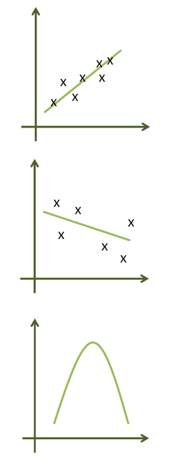
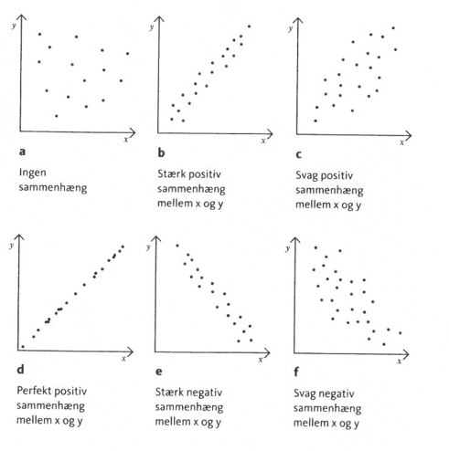
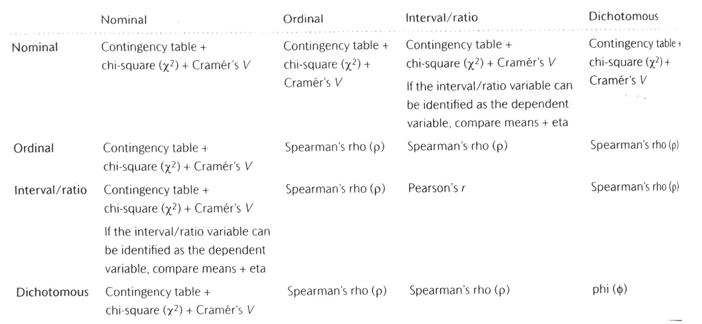
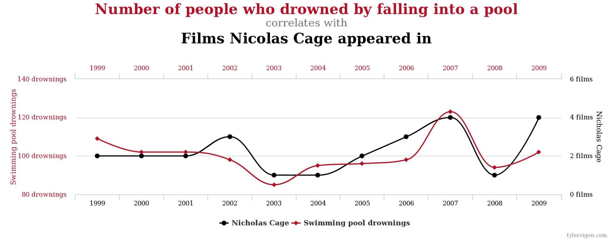

Survived n percent
No 1490 0.676965
Yes 711 0.323035Bivariat analyse
Statistik E24 (15 ECTS)
ved Mikkeline Munk Nielsen
Hvad var nu bivariat analyse?
- Hvor univariat analyse er analyse med én enkelt variabel, arbejder man i bivariat analyse med to variable.
- I univariat analyse spørger vi til en variabels fordeling og tendens.
- I bivariat analyse spørger vi til to variables indbyrdes sammenhæng.
Hvad var nu bivariat analyse?
Vi har ofte formodninger om bivariate sammenhænge, dvs. at uddannelsesniveau hænger sammen med løn. Med den bivariate analyse kan vi gå systematisk til værks og afgøre:
Hvor sikker sammenhængen kan siges at være?
Om sammenhængen er reel eller tilfældig?
Sammenhængens styrke og retning?
Hvad var nu bivariat analyse?
Mens univariat analyse kan beskrive en forekomst af et fænomen – fx at der i en befolkning er flere, der stemmer konservativt end radikalt – så kan bivariat analyse give os en (del af) forklaringen på hvorfor det er tilfældet.
- Vi finder fx en sammenhæng mellem køn og partivalg (at flere kvinder stemmer konservativt sammenlignet med mænd).
- Her kan vi sandsynliggøre, at vi stemmer forskelligt pga. vores køn.
To sider af bivariat analyse
- Den deskriptive (beskrivende) del: at beskrive din stikprøve.
Fordelinger og fortolkning af krydstabeller/grafer mellem to variable.
Korrelationskoefficienter – sammenhængens styrke, retning og linearitet.
- Den analytiske del (inferens): at slutte fra stikprøve til population.
- Hypotesetest – fokus på om forskelle mellem to grupper er tilfældig eller sand.
Tabelanalyse
Tabelanalyse er den mest grundlæggende måde at opsummere data på, også når vi har at gøre med to variable
En tabel med to variable kaldes også en tovejs-tabel eller en krydstabel
En krydstabel er en tabel, der organiserer data for to kategoriske variable og viser, hvordan observationer fordeler sig i kombination af de to variable.
Hver celle i tabellen indeholder antallet af observationer (eller andelen), der falder inden for en bestemt kombination af de to variable.
Tabelanalyse
Eksempel fra R datasættet Titanic: envejstbael for variablen overlevelse
Tabelanalyse
Eksempel fra R datasættet Titanic: krydstabel mellem passageres klasse og overlevelse
Class No Yes
1st 122 203
2nd 167 118
3rd 528 178
Crew 673 212Tabelanalyse
Tilføj totaler (både rækker og kolonner) med adorn_totals():
Tabelanalyse
Tilføj procenter med adorn_percentages() og bestem antal decimaler med adorn_pct_formatting():
Korrelationer
Korrelationer er et centralt begreb i statistik. De er et udtryk for samvariationen mellem to variable, dvs. hvordan bevæger den ene variabel sig, når den anden bevæger sig.

Positiv korrelation: Når den ene variabel stiger, stiger den anden også.
Negativ korrelation: Når den ene variabel stiger, falder den anden.
Ikke lineær sammenhæng.
Korrelationer
Kilde: Kilde: Hansen & Hansen (2012)
Korrelationskoefficienter
Konkret arbejder man med korrelationskoefficienter, som er et mål for korrelation:
- Standardiseret mål for styrken af en sammenhæng.
- Beskriver den lineære sammenhæng imellem dem.
- Den ligger altid mellem \(+1\) og \(-1\) – dog ikke for nominal skala.
- Sammenhængen er stærkere, jo højere numerisk værdi den har.
- Når den er 0, er der ingen sammenhæng.
- \(+/- 0.15\) betragtes som grænsen for fortolkning.
Korrelationskoefficienter
Hvornår er en korrelation stærk? Hansen & Hansen (2012) siger…
| Korrelationskoefficient | Styrke |
|---|---|
| +1,00 | Perfekt positiv sammenhæng |
| +0,30 | Stærkt positiv sammenhæng |
| +0,20 | Moderat positiv sammenhæng |
| +0,10 | Svagt positiv sammenhæng |
| 0,00 | Ingen nævneværdig sammenhæng |
| -0,10 | Svagt negativ sammenhæng |
| -0,20 | Moderat negativ sammenhæng |
| -0,30 | Stærkt negativ sammenhæng |
| -1,00 | Perfekt negativ sammenhæng |
Korrelationskoefficienter
Kilde: Kilde: Hansen & Hansen (2012)
Korrelationskoefficienter
Når der indgår en nominalskala variabel anbefales det at bruge korrelationsmålet Cramer’s \(V\). Denne korrelationskoefficient ligger mellem \(0\) og \(1\).
Eksempel med køn og ansættelsestype fra European Social Survey:
krydstabel <- table(as.character(ESS$koen),
as.character(ESS$ansaettelse_type))
library(DescTools)
CramerV(krydstabel)[1] 0.1169228- Cramer’s \(V=0.12\)
- Der ser ud til at være en svag sammenhæng mellem køn og ansættelsestype.
Korrelationskoefficienter
To ordinale variable: Bruges korrelationskoefficienten Spearman’s Rho.
Eks: Eget uddannelsesniveau og partners uddannelsesniveau:
Spearman's rank correlation rho
data: as.numeric(ESS$udd) and as.numeric(ESS$udd_partner)
S = 83376532, p-value < 2.2e-16
alternative hypothesis: true rho is not equal to 0
sample estimates:
rho
0.5101004 \(rho=0.5\)
Der ser ud til at være en ret solid positiv sammenhæng mellem folks eget og deres partners uddannelsesniveau
Korrelationskoefficienter
To intervalskalerede variable:
Bruges korrelationskoefficienten Pearson’s \(r\):
Pearson’s \(r\) er et beskrivende mål for styrken og retningen på sammenhængen mellem to intervalskalerede variable.
Beskriver den lineære sammenhæng imellem dem.
Sammenhængen er stærkere, jo højere numerisk værdi den har (jo længere væk fra 0).
Korrelationen kan ses som et mål for, hvor godt en lineær linje beskriver sammenhængen mellem de to variable.
Korrelationskoefficienter
Eks. Indkomst og antal års uddannelse.
Pearson's product-moment correlation
data: ESS$udd_aar and ESS$net_indkomst
t = 9.2884, df = 1201, p-value < 2.2e-16
alternative hypothesis: true correlation is not equal to 0
95 percent confidence interval:
0.2053692 0.3108539
sample estimates:
cor
0.2588832 \(Pearsons=0.26\)
Der ser ud til at være en svag/moderat positiv sammenhæng mellem indkomst og antal års uddannelse.
Hypotesetest i bivariat analyse
Vi kan f.eks. bruge hypotesetests i bivariat analyse til at besvare spørgsmålene:
Er der en signifikant forskel på en middelværdi X (f.eks. Løn) mellem to grupper på en variabel Y (f.eks. Køn) \(\rightarrow\) T-test
Er der en signifikant sammenhæng mellem X og Y (udtrykker sammenhængen i vores stikprøve en ”sand” sammenhæng i populationen?) \(\rightarrow \chi^2\) -test
Forskelle på to middelværdier: t-test
Hvis vi har en skala variabel kan vi bruge hypotesetest til at undersøge, om middelværdien på denne variabel er forskellig mellem to grupper. Her vender vi tilbage til t-testen!
F.eks. Er der forskel på mænd og kvinders gennemsnitlige løn?
Hypoteserne er i dette tilfælde:
H0: der er ikke nogen signifikant forskel på de to grupper, når det kommer til løn
H1: der er en signifikant forskel på de to grupper, når det kommer til løn
\[t = \frac{\overline{y}_1 - \overline{y}_2}{\sqrt{\frac{s_1^2}{n_1} + \frac{s_2^2}{n_2}}}\]
Forskelle på to middelværdier: t-test
\(t\): teststatistik (t-værdi)
\(\overline{y}_1\): det gennemsnit vi har udregnet på baggrund af den første stikprøve, altså gennemsnittet for den ene gruppe, f.eks. for kvinderne
\(\overline{y}_2\): det gennemsnit vi har udregnet på baggrund af den anden stikprøve, altså gennemsnittet for den anden gruppe, f.eks. for mændene
\(n_1\) og \(n_2\): antallet af personer i de to grupper
\(s_1\): standardafvigelsen i den første stikprøve (altså f.eks. blandt kvinderne)
\(s_2\): standardafvigelsen i den anden stikprøve (altså f.eks. blandt mændene)
Vores teststatistik er approksimativt standardnormalfordelt, hvis \(n\) er stor.
Forskelle på to middelværdier: t-test
Welch Two Sample t-test
data: net_indkomst by koen
t = 3.996, df = 1196.2, p-value = 6.835e-05
alternative hypothesis: true difference in means between group Mand and group Kvinde is not equal to 0
95 percent confidence interval:
951.6131 2787.3512
sample estimates:
mean in group Mand mean in group Kvinde
16893.57 15024.09 Gennemsnits netteindkomst for \(mænd=16.893\) og \(kvinder=15.024\) DKK
Siden p-værdien er mindre end 0,05 afviser vi nulhypotesen og konkluderer, at der ER en statistisk signifikant forskel på gennemsnitsindkomsten for mænd og kvinder.
Summeøvelse
Giv et eksempel på, hvornår denne test kan være brugbar i dit fag (med hypoteser)
\(\chi^2\)-test for uafhængighed
Vi kan anvende en \(\chi^2\) testen til at teste, om to variable er uafhængige, eller om der ser ud til at være en statistisk sammenhæng mellem dem.
\(\chi^2\)-testen kan anvendes til kategorielle variable, dvs. variable på ordinalt eller nominalt niveau (men i øvrigt til variable på alle måleniveauer, hvis de omkodes til kategorier).
Her vil vi som oftest have afhængige variable med tre eller flere kategorier (fx uddannelsesniveauer)
\(\chi^2\)-test for uafhængighed
\(\chi^2\)-testen tager udgangspunkt i en krydstabel. Ideen er, at man sammenligner den observerede fordeling i stikprøven med den fordeling som man ville finde, hvis de to variable var uafhængige, dvs. hvis der ikke var nogen sammenhæng.
Hypoteserne er som følgende:
H0: Der er ingen sammenhæng mellem de to variabler
H1: Der er en sammenhæng mellem de to variabler
\(\chi^2\)-test for uafhængighed
Når man udregner en chi² test, så gør man tre ting:
- Opgør hvordan respondenterne faktisk fordeler sig
- Udregner hvordan respondenterne ville fordele sig i krydstabellen, hvis der ikke var nogen sammenhæng mellem de to variable
- Sammenligner de to fordelinger
Hvis forskellen mellem de to fordelinger er stor, så afviser vi at de to variable er uafhængige (forkaste nulhypotesen).
\(\chi^2\)-test for uafhængighed
For at drage konklusioner om en chi²-test har man principielt brug for to værdier:
\(\chi^2\)test-værdi
Kritisk værdi som afhænger af antallet af frihedsgrader:
- Frihedsgrader: afhænger af tabelstørrelsen, helt præcist udregnes det som
(antallet af rækker − 1) × (antallet af kolonner − 1) - Ved hjælp af frihedsgraderne kan man slå den kritiske værdi op i en tabel.
- Frihedsgrader: afhænger af tabelstørrelsen, helt præcist udregnes det som
Det er lettere i R… Her kan vi som sædvanlig bare kigge på p-værdien. Nemt!
\(\chi^2\)-test for uafhængighed
Er der en sammenhæng mellem ansættelsestype og uddannelsesniveau?
ESS %>%
select(udd, ansaettelse_type) %>%
na.omit() %>%
tabyl(udd, ansaettelse_type) %>%
chisq.test()
Pearson's Chi-squared test
data: .
X-squared = 8.6358, df = 6, p-value = 0.1951\(\chi^2\)-testen returnerer en p-værdi på 0,2. Da det er over grænsen på 0,05 kan vi ikke forkaste nulhypotesen. Vi kan ikke afvise, at der ikke er nogen sammenhæng mellem de to variable, med udgangspunkt i denne stikprøve.
Summeøvelse
Giv et eksempel på, hvornår denne test kan være brugbar i dit fag (med hypoteser)
Korrelation er ikke kausalitet…
- Korrelation er et udtryk for sammenhæng mellem to variable, men det betyder ikke, at der nødvendigvis er tale om en årsagssammenhæng (kausalitet).
- En statistisk sammenhæng kan sagtens skyldes forhold, man ikke har taget højde for/ikke kender til.
- Hvis man udelader en vigtig variabel, som er korreleret med både afhængig og uafhængig variabel, kan man komme til at over-/undervurdere sammenhængens styrke.
Korrelation er ikke kausalitet…
Korrelation er ikke kausalitet…
Hvad skyldes spuriøse sammenhænge?
Tilfældighed: Der er ingen logisk sammenhæng mellem drukneulykker og Nicolas Cage-film…
Confounding: Der er en (eller flere) andre variable, som korrelerer med både \(X\) og \(Y\), men som man ikke har taget højde for.
Korrelation er ikke kausalitet…
Hvad skyldes spuriøse sammenhænge?
Sampling error: korrelationer i stikprøven findes ikke i populationen
(Fuld) mediering: linket mellem X og Y er ikke direkte, det medieres (går igennem) udelukkende af en anden variabel
Betingelser for kausalitet
- Der er forbindelse imellem årsag og virkning (empirisk).
- Tidsrækkefølgen: Årsagen kommer før virkningen.
- Den generative mekanisme skal kunne begrundes (teoretisk).
- Alternative forklaringer kan udelukkes (statistisk kontrol).
Næste semester
Gæt engang
- Næste semester skal I lære at udføre statistisk kontrol med multivariat analyse!